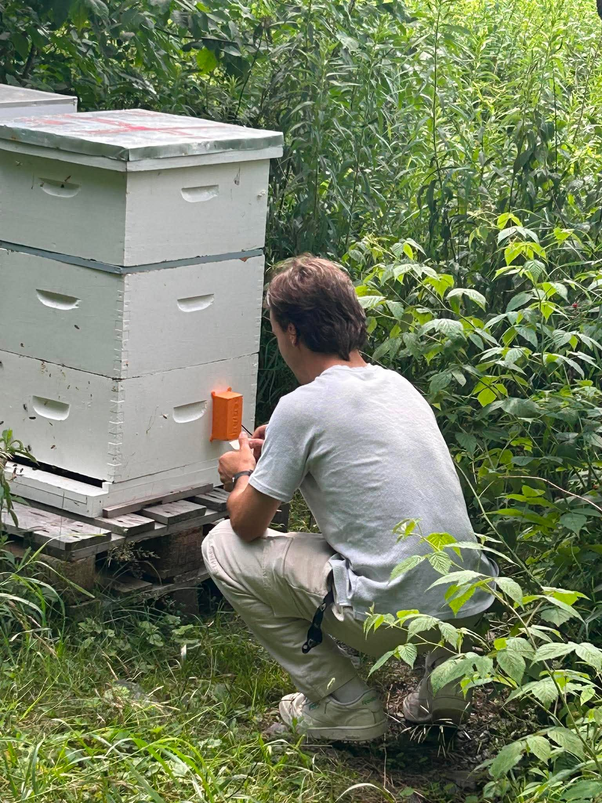
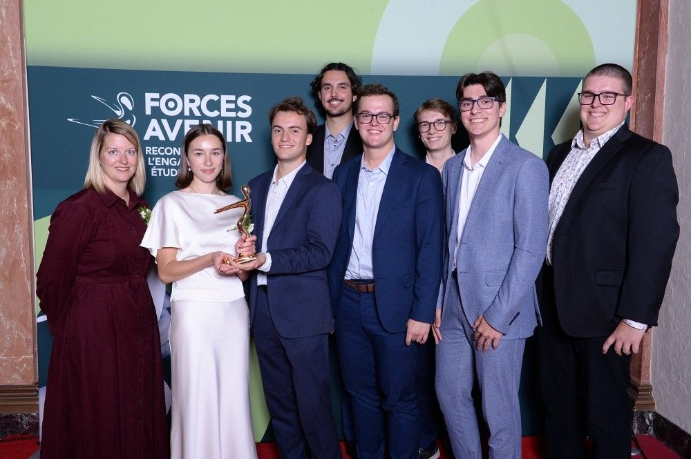
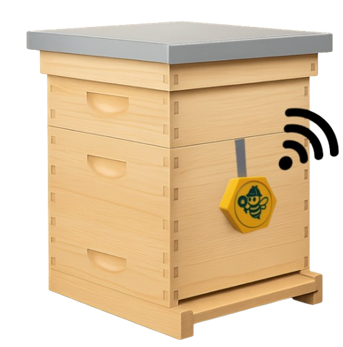

Sherbee is a startup developing audio-powered varroa mite detection technology for beekeepers. I contributed to product development, built the marketing website, developed strategic partnerships with beekeepers and agricultural organizations, and helped secure grants and external funding. This project combines embedded systems, signal processing, and business development.

The product is essentially a sensor that can be attached to a beehive, and estimates in real-time the presence and quantity of varroa mites. This is achieved thanks to a major breakthrough, which allows us to detect the unique audio signature of varroa mites.
My role has been multifaceted, spanning technical development, marketing, and business strategy. For example, I have built the public-facing website and user tools, planned financial strategies, developed partnerships with beekeepers and industry groups, and supported grant applications and external funding. My work bridged engineering and outreach to drive product validation and adoption.

